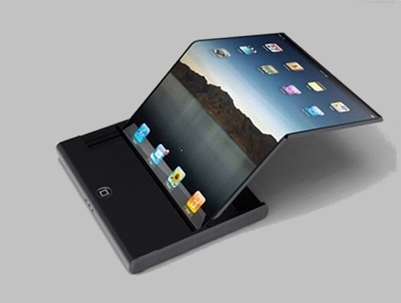

<!DOCTYPE html>
<html lang="en">
<head>
    <meta charset="UTF-8">
    <meta name="viewport" content="width=device-width, initial-scale=1.0">
    <link rel="stylesheet" href="css/style.css" href="">
    <title>Tecnología flexible y fija</title>
</head>
<body>

</body>
</html>
<body>
    <header> <!-- encabezado -->
        <div id="titulo">
            
            <h1>Tecnología flexible y fija </h1>
        </div>
        <nav> <!-- menu-->
            <center><ul>
               <li><a href="index.html">Inicio</a></li>
                <li><a href="Caracteristicas.html">Caracteristicas</a></li>
                <li><a href="usos.html">Usos</a></li>
                <li><a href="importancia.html">Importancia</a></li>
            </ul></center>
        </nav>
    </header>
    <article>
        <section>
            <h1>TFF</h1>
            <p><strong>Autor:</strong>Andrés López López</p>
            <div>
                
                <p><span>Definicion:</span></p>
            </div>
            <p>
                La tecnología flexible es aquella que se puede utilizar en distintos productos finales, independientemente 
                de su desarrollo u objetivo original. Ejemplo son las pantallas de televisión, que si bien se crearon para un 
                producto concreto, luego se ha podido implementar en monitores, consolas, smartphones, etc.
                Sin embargo podemos afirmar que una tecnología que hoy es fija podría ser en el futuro flexible, en el supuesto
                 de que se le pueda asignar alguna utilidad extra. Lo que no se puede ver es una tecnología flexible convertirse 
                 en una tecnología fija, ya que una vez que adquiere esta característica, queda inherente, sea su uso tendencia o no.
            </p>
        </section>
    </article>
    <aside>
        <h1>ALUMNO:</h1>
        <p id="alumnoperfil"></p>
        <p><strong>Nombre:</strong>Andrés López López</p>
        <p><strong>Correo:</strong>andres.lopez39@unach.mx</p>
        <p><a href="https://www.unach.mx/">Sitio UNACH</a></p>
    </aside>
    <footer> <!-- pie de pagina-->
        <p>Boulevard Belisario Dominguez, Kilometro 1081,Sin Numero, Teran Tuxtla Gutierrez, Chiapas.</p>
        <p>&copy; 2020 Derechos reservados</p>
    </footer>
</body>